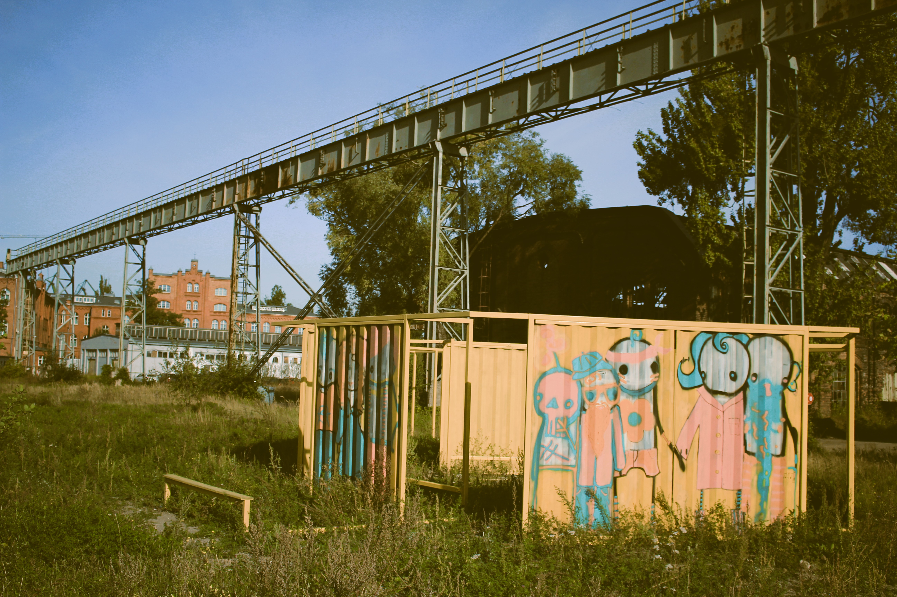
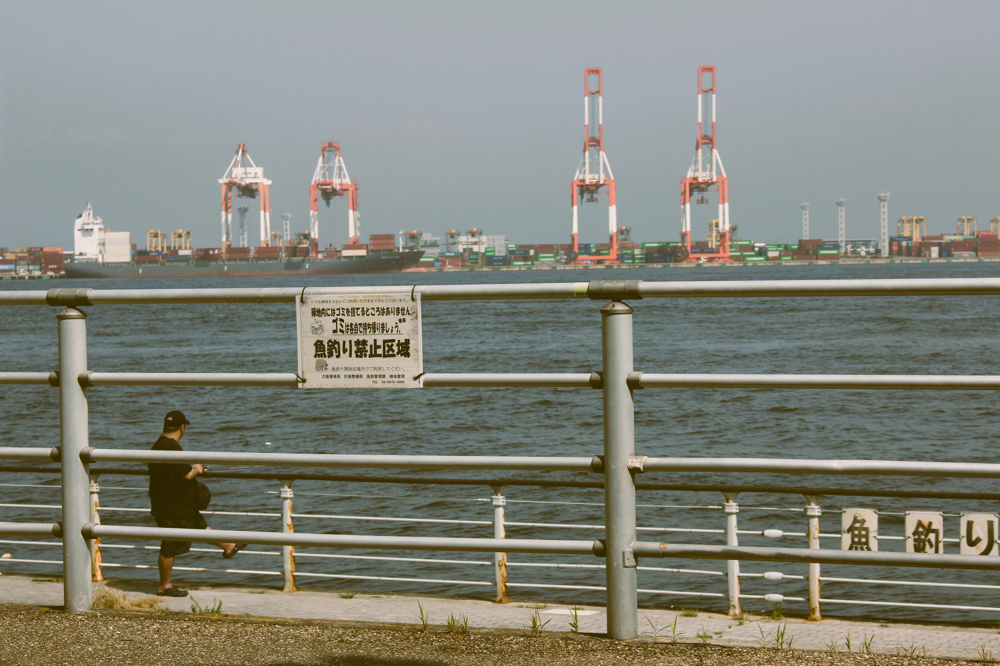
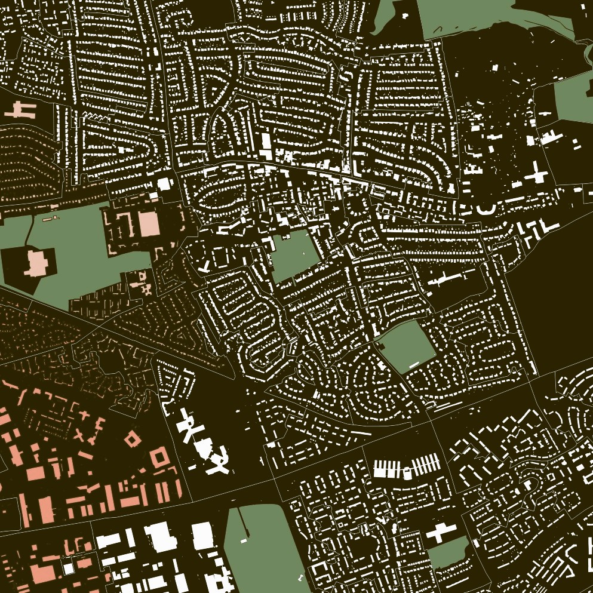

A synethis of thoughts and observations from the realm of urban geographic information science and map-making


Using Network Analysis and Multi-Criteria Analysis to inform active-travel infrastructure alignment

A look into how greenspace availability and quality influences mental health outcomes.